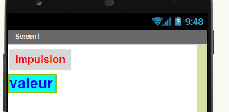

 |
Exemple 3 APP Inventor: Commander une sortie Arduino avec le smartphone |
Ce document est un petit exemple de prise en main destiné à vous aider dans votre apprentissage de App Inventor pour piloter la carte Arduino avec l'IHM conçue.
Avant de commencer l'exercice, lire les chapitres "ressources app inventor" et regarder les tutoriels donnés ainsi que le document PDF suivant: document pdf d'aide plus complet
Avant de commencer l'exercice,il faut avoir vu comment connecter le smartphone au Bluetooth de la carte
COMMANDER LA CARTE ARDUINO AVEC LE TELEPHONE
Configuration :
Programme de la carte Arduino
Programme : 1_arduino_bluetooth |
Commentaires |
//Définition des entrées sorties const int LED_PIN = 13; const int RELAIS=7; //Déclaration des variables word w; //mot qui reçoit les trames émises //Initialisation des E/S et communication void setup() { Serial.begin(9600); //vitesse de transmission pinMode(LED_PIN,OUTPUT) ; pinMode(RELAIS,OUTPUT) ; } //Programme principal void loop() { recevoir(); if (w==1) { digitalWrite(LED_PIN,HIGH); digitalWrite(RELAIS,HIGH); } if (w==0) { digitalWrite(LED_PIN,LOW); digitalWrite(RELAIS,LOW); } delay(1000); } //procédure qui lit les trames de la tablette void recevoir(){ if (Serial.available()) { w=Serial.read(); Serial.flush(); } } //The end |
Définition des E/S Le mot « w » sera la variable qui recevra les trames Bluetooth émises par le Smartphone Configuration débit de transmission Bluetooth Configuration des voies 7 & 13 en sorties Boucle de scrutation Lire les trames Bluetooth Si trame Bluetooth = 1 Allumer Led Commander le relais Si trame Bluetooth = 0 Eteindre Led Ne plus commander le relais Temporisation de 1s avant nouvelle scrutation Procédure de lecture de la trame Bluetooth |
Application App inventor:
Depuis App inventor, importer le fichier : "ex3_arduino_lampe.aia"
Essais:
Tester le programme;
faire quelques modifications: changer l'image, changer l'aspect des boutons
Créé avec HelpNDoc Personal Edition: Produire facilement des livres électroniques Kindle